Pippu
Pippu · Hokkaido
Pippu
Highlighted on the Hokkaido map.
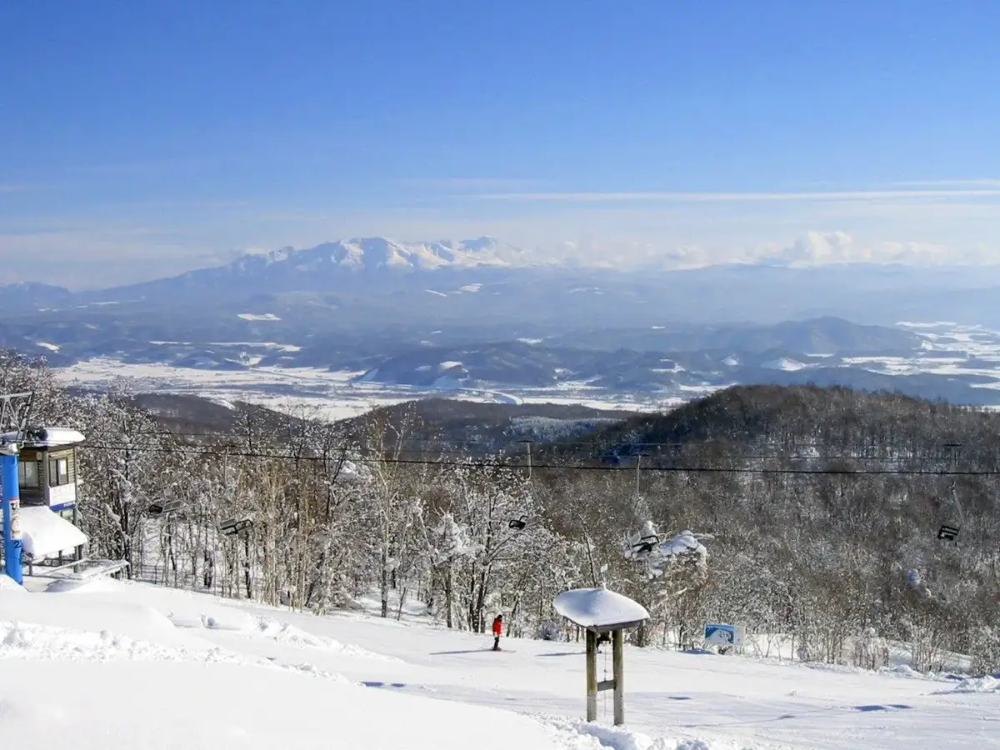
Stay
宿屋ＹＡＤＯＫＡＲＩ２ｎｄ
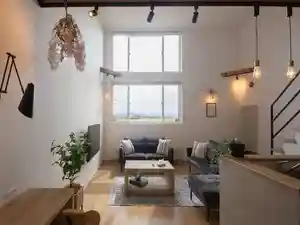
Yadoya Y A D O K A R I 2 N D
宿屋 ＹＡＤＯＫＡＲＩ
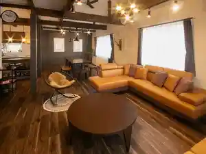
Yadoya Y A D O K A R I
遊湯ぴっぷ
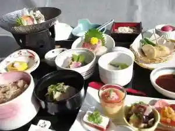
Yuuyuu Pippu
Dining
北海道ぴっぷ商店
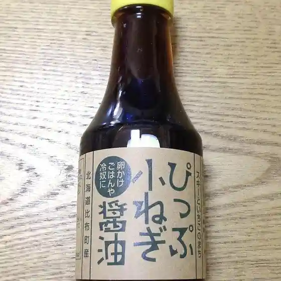
Hokkaidou Pippu Shouten
荒尾調理部
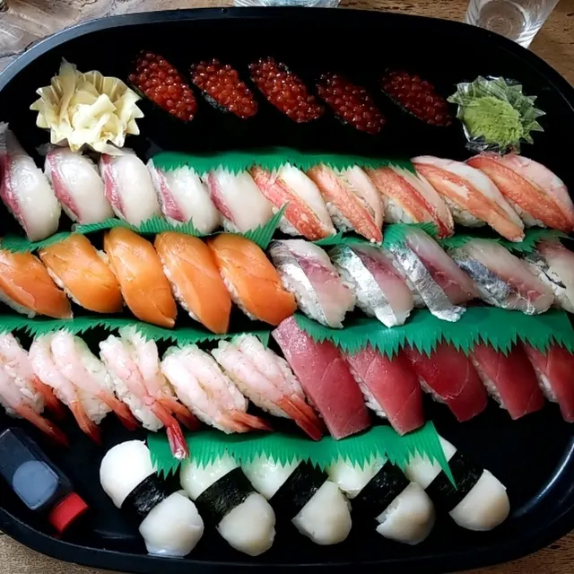
Arao Chouri Bu
かっぱの健卵販売所
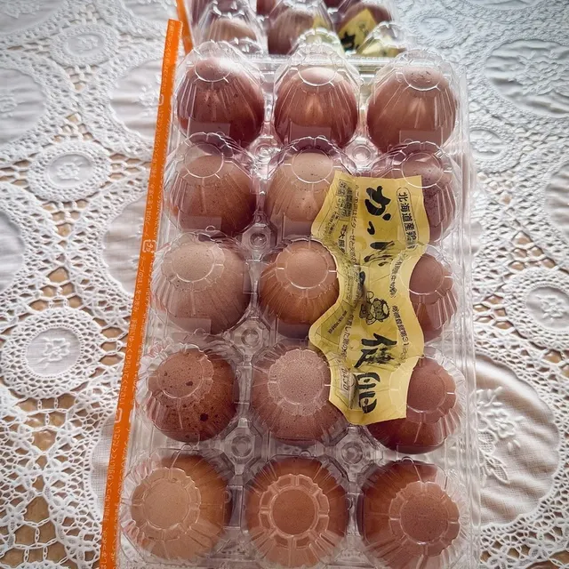
Kappano Takeshi Tamago Hanbaijo
そよ風にのって
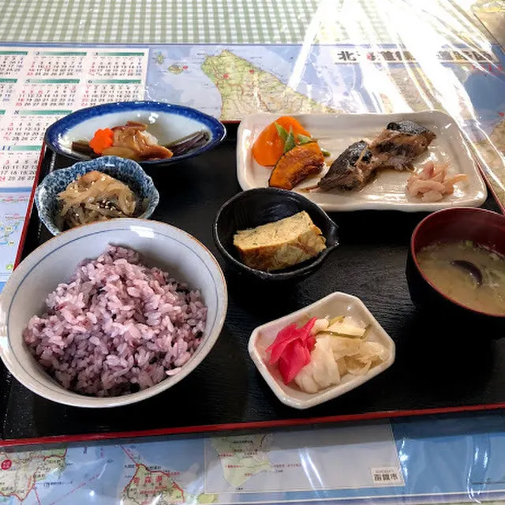
Soyo Kaze Ninotte
おいでよ

Oideyo
ナナプラザ
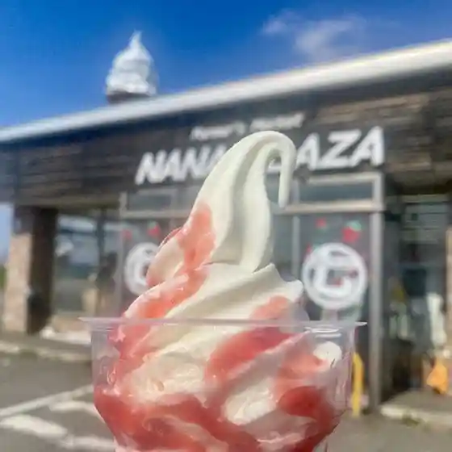
Nanapuraza
セイコーマート 比布新町店
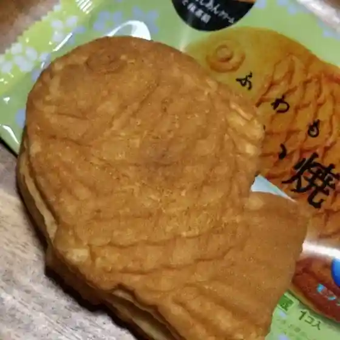
Seikoomaato Pippu Shinmachi Mise
道CAFE
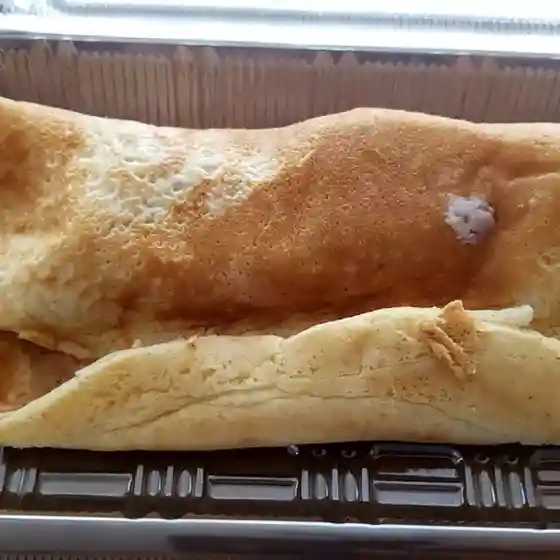
Michi Cafe
ぴっぷりん
Pippurin
ふれあいファーム たかだ畑
Fureai Faamu Takada Hatake
セブンイレブン 上川比布町店
Sebun'Irebun Kamikawa Pippu Machi Mise
にじます工房
Nijimasu Koubou
良佳プラザ 遊湯ぴっぷ
Ryou Ka Puraza Yuuyuu Pippu
ピピマルシェ
Pipimarushie
かっぱの健卵 新鮮卵直売店
Kappano Takeshi Tamago Shinsen Tamago Chokubai Mise
ブルズキッチン-078-
Buruzukitchin -078
ピピカフェ比布駅
Pipikafe Pippu Eki
ばらえていきっちん 紙風船 遊湯ぴっぷ店
Baraeteikitchin Kamifuusen Yuuyuu Pippu Mise
ばらえていきっちん 紙風船 比布店
Baraeteikitchin Kamifuusen Pippu Mise
のうりえ食堂
Nourie Shokudou
大熊養鶏場
Ookuma Youkei Ba
赤兵衛
Aka Bee
ほくれいロッジ
Hokurei Rojji
雪番屋
Yuki Banya
Sights
Pippu Ski Area
Pippu Ski Area
Totsu Sho Mountain
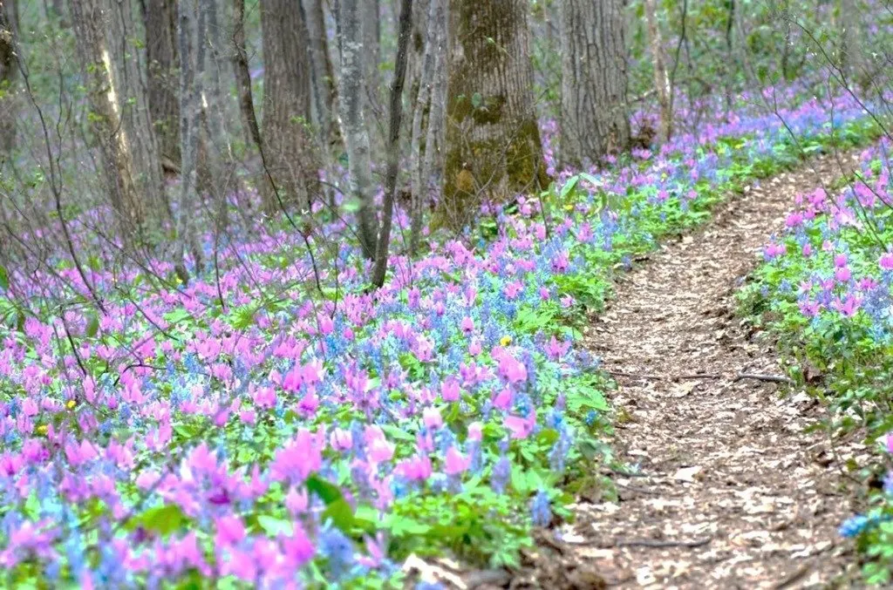
Totsu Sho Mountain
Pippuichigo Kari
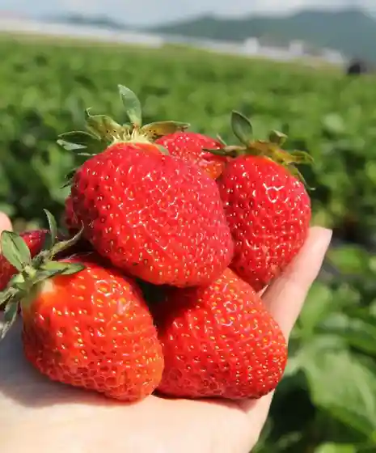
Pippuichigo Kari
Sen Shima Sasa Kogei Hall
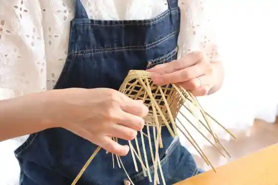
Sen Shima Sasa Kogei Hall